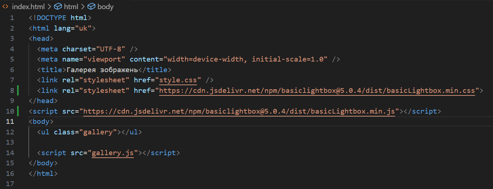
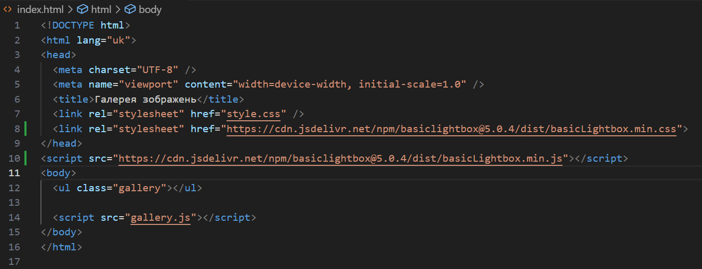

Місце виведення інформації
Тема
WEB-СХОВИЩЕ. WEB STORAGE API. МОДУЛЬНОСТЬ КОДУ. СТВОРЕННЯ МОДАЛЬНОГО ВІКНА.
Мета проєкту
придбати практичні навички роботи створення модального вікна; повторити процес створення макету, зокрема створення макету галереї довільних зображень; закріпити навички роботи з делегуванням подій.
Місце розташування
.png) 

Висновки
У ході виконання лабораторної роботи було досягнуто поставлену мету: набуті практичні навички створення модального вікна, реалізовано галерею довільних зображень, що дозволило закріпити навички верстки та структурування інтерфейсу. Також було успішно застосовано Web Storage API для збереження даних у браузері, що дало можливість опрацювати механізми локального сховища та сесійного зберігання. Окрема увага приділялася модульності коду, що забезпечило його гнучкість, повторне використання та зручність підтримки. Використання делегування подій дозволило оптимізувати роботу з DOM і підвищити ефективність взаємодії з елементами сторінки. Загалом лабораторна робота сприяла глибшому розумінню сучасних підходів до побудови клієнтських web-застосувань, що є важливим етапом у професійній підготовці в сфері front-end розробки.